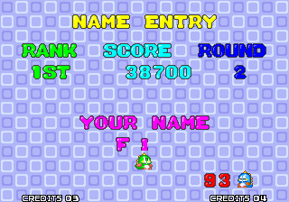
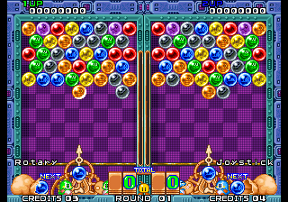
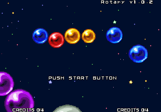

Puzzle Bobble, but with rotary controls
Rotary Bobble is a ROM hack for the Neo Geo game Puzzle Bobble. It replaces the joystick controls with a rotary dial. A custom controller is used to send angle values to the game as the dial turns.
I always felt this is how the game should have been made. The rotary controls are much more accurate and more fun to use.
pbobblen.zip from your MAME roms into a directory
somewhere
rotaryBobbleIpsPatches.zip release
here
into that directory
69c9ea415773af94ac44c48af05d55ada222b138
042ae50a528cea21cf07771d3915c57aa16fd5af
328429d11de5b327a0654ae0548da4d0025a2ae6
Difficulty select, number of player select and high score name entry are all done with rotary controls. It might take a little bit to get used to this. The high score screen's timer was increased to 99 to help a bit.
You can switch to joystick controls by holding start for 1.5 seconds. It will show what you just switched to for a moment on the side of the screen. Each player can do this. Useful if you want to play a two player game but only have one rotary controller.
At the title screen, the version of the hack is shown. Please include this version if reporting a bug. To see this on MVS, don't insert a coin during the eyecatcher.
